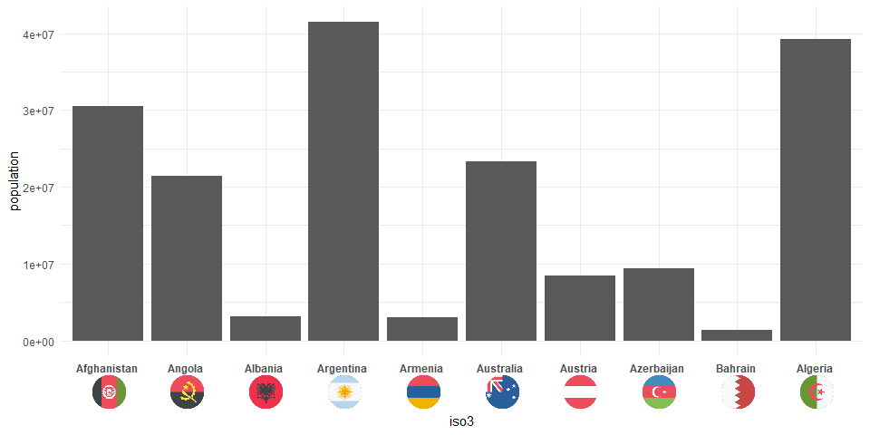

This is very much work in progress. I apologize for incomplete documentation.
Installation
You can install ggoxford from github with:
# install.packages("devtools") devtools::install_github("schliebs/ggoxford")
Example
This is a basic example of how to add country flags to bar plots:
library(tidyverse) library(ggoxford) library(ggtext) wpop2013 <- tidyr::population %>% filter(year == 2013) %>% filter(population > 1e6) %>% mutate(iso3 = countrycode::countrycode(country, origin = "country.name.en", destination = "iso3c") ) head(wpop2013,10) #> # A tibble: 10 x 4 #> country year population iso3 #> <chr> <int> <int> <chr> #> 1 Afghanistan 2013 30551674 AFG #> 2 Albania 2013 3173271 ALB #> 3 Algeria 2013 39208194 DZA #> 4 Angola 2013 21471618 AGO #> 5 Argentina 2013 41446246 ARG #> 6 Armenia 2013 2976566 ARM #> 7 Australia 2013 23342553 AUS #> 8 Austria 2013 8495145 AUT #> 9 Azerbaijan 2013 9413420 AZE #> 10 Bahrain 2013 1332171 BHR
ggplot(data = wpop2013 %>% slice(1:10), aes(x = iso3, y = population)) + geom_bar(stat = "identity") + theme_minimal() + geom_axis_flags(breaks = wpop2013$iso3, labels = wpop2013$country, country_icons = wpop2013$iso3, width = 30, lineheight = 2, fontface = "bold" )

Or with a few details added (now for the last 10 countries)
set.seed(123) ggplot(data = wpop2013 %>% sample_n(10) , aes(x = iso3, y = population)) + geom_bar(stat = "identity") + geom_text(aes(label = paste0(round(population/1e6),"m")),vjust = -0.25)+ scale_y_continuous(breaks = seq(0e6,80e6,10e6), labels = scales::comma(seq(0e6,80e6,10e6))) + theme_minimal() + labs(x = NULL,y = "Population",title = "Population in 2013")+ geom_axis_flags(breaks = wpop2013$iso3, labels = wpop2013$country, country_icons = wpop2013$iso3, width = 30, lineheight = 2, fontface = "bold" )